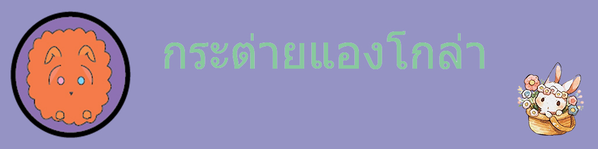
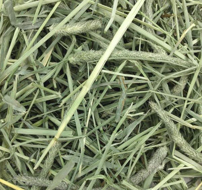

 |
|||||
เมนู |
การให้อาหารเช่นเดียวกับกระต่ายทั่วไปคือ มีหญ้าแห้งอยู่ตลอดเวลา ไฟเบอร์จากหญ้าแห้งจะช่วยให้กระต่ายขับถ่ายได้ดี โดยเฉพาะอย่างยิ่งกับกระต่ายที่มีขนที่ยาวเช่นกระต่ายแองโกร่า อาหารเม็ดที่ให้ควรมีไฟเบอร์ไม่ต่ำกว่า 13% และการให้น้ำตลอดเวลาจะช่วยในการขับถ่ายเช่นกัน |
||||
หน้าแรก
|
|||||
ที่มา:google.comอ้างอิงhttp://thai-rabbit.blogspot.com/2014/12/angora-rabbit.htmlเฟซ:สุภาตรี ฯไลน์:สุภาตรี รอดกระทึก |
|||||